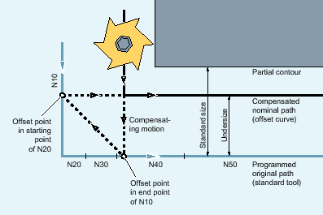

The NC program describes the center point path of a standard tool. The contour for a tool that is actually used results in undersize, which is shown unrealistically large to demonstrate the geometric relationships in the following figure.
The control also only has an overview of three blocks in the example:
MD20240 $MC_CUTCOM_MAXNUM_CHECK_BLOCKS = 3
Since an intersection exists only between the offset curves of the two blocks N10 and N40, the two blocks N20 and N30 would have to be omitted. In the example, the control does not know in block N40 if N10 has to be completely processed. Only a single block can therefore be omitted.
With active CDOF2, the compensation motion shown in the figure is executed and not stopped. In this situation, an active CDOF or CDON would result in an alarm.